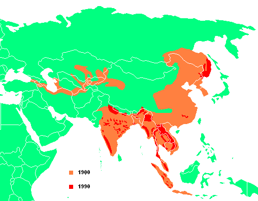

Tigris-bugris
Jellemzése
A tigris (Panthera tigris) a ragadozók rendjébe és a macskafélék családjába tartozó faj. Valamennyi alfaja veszélyeztetett. A tigris a legnagyobb ma élő macskaféle, méretben csak a jégkorszaki amerikai oroszlán és a smilodon múlta felül. A tigrisek méretei és egyéb jellemzői alfajonként változóak. A vadon élő hím tigrisek (a kihalt alfajokat nem beleszámítva) 100 és 306 kg közötti tömegűek, hosszuk a farokkal együtt 220–330 cm (a farok hossza 60–110 cm). Nemi kétalakúság figyelhető meg, a nőstény tigrisek jóval kisebbek, 75–167 kg-ot érhetnek el, hosszuk 215–275 cm.[1] A legkisebb alfaj a szumátrai tigris, a legnagyobb a szibériai tigris és a bengáli tigris.
Elterjedése
A tigris korábban a Közel-Kelettől a Távol-Keletig Ázsia jelentős részén előfordult. Fosszilis adatok szerint a pleisztocén és kora holocén idején még Srí Lanka, Japán és Borneó területén is megtalálható volt.[2] Mára szabadon csak Kínában, Tibetben, Szibériában, Mongóliában, Malajziában, Thaiföldön, Nepálban és Indiában lelhető fel.
Élőhelye igen változatos, a trópusi esőerdőkben, a száraz erdőkben, a mangrove mocsarakban és a magas füvű területeken egyaránt megtalálható. A legtöbb tigris erdőkben, illetve füves területeken lakik, amihez bundájuk mintázata is alkalmazkodott. Bár első látásra kirívónak tűnik a fekete csíkozás narancssárga alapon, de a száraz, narancssárgás árnyalatú fűben nagyon jól el tud rejtőzni.